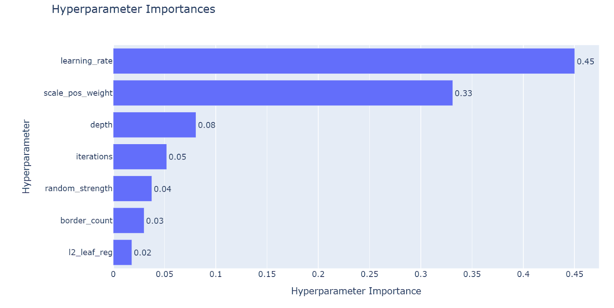

Fraud Detection with Machine Learning
1. Background and Objective
This project focuses on developing a machine learning–based fraud detection system for real-world transaction data.
Fraudulent transactions are typically rare, highly heterogeneous, and evolve over time, making rule-based systems or single global models insufficient.
The objective of this project is to build a robust, explainable, and scalable modeling framework that improves fraud detection performance by combining domain-informed feature engineering, user-segmentation modeling, and ensemble learning.
2. Data Characteristics and Challenges
The transaction data exhibits several industry-grade challenges:
- Severe class imbalance: fraudulent transactions account for a very small fraction of all samples
- Missing values: some features are only observable under specific conditions
- Temporal dependency: user and merchant historical behavior strongly influences current transactions
- Strong heterogeneity: risk patterns differ significantly across users, merchants, and regions
Given these properties, the project prioritizes modeling strategy and feature design over excessive model complexity.
3. Feature Engineering
3.1 User-Level Features
Encrypted address information enables unique identification of purchasers, allowing user-centric historical analysis.
Key idea: segment users based on purchase history- New users (first-time purchasers)
- Long-time users (with purchase history)
For users with purchase history, the following features were constructed:
- Number of historical purchases
- Consistency between current and historical devices
- Deviation of the current transaction amount from historical averages
- Behavioral pattern shift indicators
These features capture behavioral consistency, which is critical for fraud detection.
3.2 Merchant-Level Features
To complement transaction-level signals, merchant-specific risk characteristics were incorporated:
- Historical fraud rate of the merchant
- Historical transaction volume and amount
store_device_diversityto capture abnormal device usage patterns
This enables the model to learn merchant-level risk profiles.
4. User Segmentation Modeling Strategy
New users and long-time users differ fundamentally in both available information and behavioral stability.
Therefore, this project adopts an explicit user segmentation modeling strategy.
4.1 Modeling Policy
- Users are segmented based on historical transaction availability
- Separate evaluation for:
- New users
- Users with purchase history
- Temporal order is strictly preserved to prevent data leakage
5. Model Selection
Multiple models were evaluated during experimentation:
- CatBoost (primary model)
- XGBoost
- Random Forest
- MLP / Transformer (exploratory)
Considering robustness to missing values, handling of categorical features, and training stability, CatBoost was selected as the core model.
6. Hyperparameter Tuning and Analysis
Systematic hyperparameter tuning was conducted for CatBoost, along with importance analysis.
Key findings include:
learning_ratehas the largest impact on performancescale_pos_weightis critical for improving F1-score under class imbalance- Tree depth and number of iterations mainly control model complexity and generalization
These insights guided efficient and interpretable tuning strategies.

7. Ensemble Learning
To further enhance robustness, AutoGluon was applied for ensembling:
- Automatic combination of multiple model predictions
- Improved generalization and stability
- Used as a benchmark against single-model performance
8. Experimental Results (F1-score)
8.1 Overall Performance
- F1 score: 0.31 → 0.50
8.2 Segmented Performance
| User Group | Before | After |
|---|---|---|
| Users with purchase history | 0.44 | 0.60 |
| Users without purchase history | 0.18 | 0.30 |
These results indicate:
- Historical behavior features are highly influential for fraud detection
- New users remain more challenging, but segmentation significantly improves performance
- Group-wise evaluation better reflects real business impact than aggregate metrics
9. Summary
This project demonstrates that effective fraud detection relies on:
- Domain-driven feature engineering
- Modeling strategies tailored to imbalanced data
- Explicit user segmentation (new vs. long-time users)
- Robust learning with CatBoost and ensemble methods
The framework is production-oriented and can be naturally extended to merchant-level, regional, or time-window–based modeling.